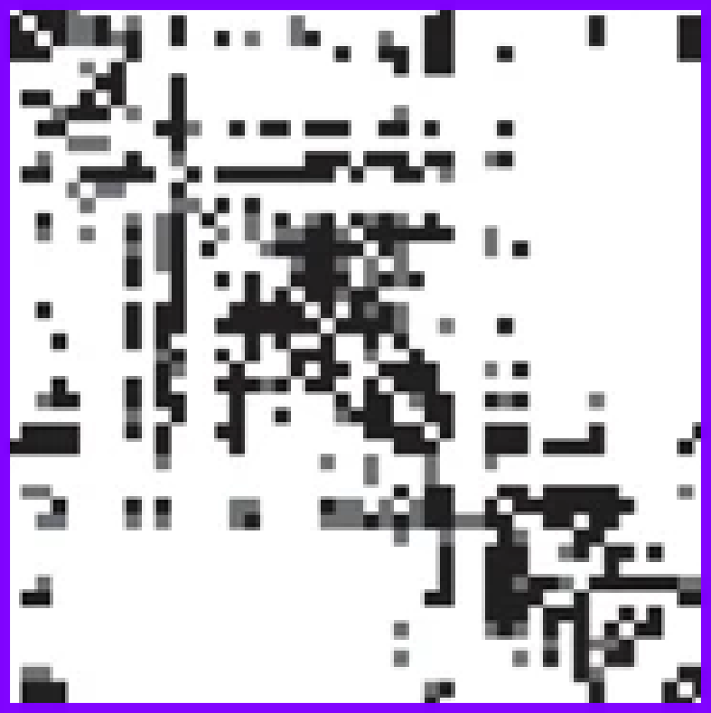

name: title layout: true class: center --- layout: false count: false .center[ <a href="https://oesteban.github.io/talks/20260510-ISMRM/"> <object type="image/svg+xml" data="images/qr-talk-url.svg" style="width: 20%"></object> <br /> https://oesteban.github.io/talks/20260510-ISMRM/ </a> <br /> <br /> # Functional MRI Data Analysis Pipelines ## Five rules from preprocessing to reproducibility <br /> Oscar Esteban <<code><a href="mailto:phd@oscaresteban.es">phd@oscaresteban.es</a></code>> #### ISMRM 2026 · *Analysis Pipelines: Demos* · Cape Town · May 10<sup>th</sup>, 2026 ] ??? Welcome. This is the *Functional MRI* slot of the *Analysis Pipelines: Demos* session. --- name: newsection layout: true .perma-sidebar[ <p class="rotate"> <a rel="license" href="http://creativecommons.org/licenses/by/4.0/"><img alt="Creative Commons License" style="border-width:0; height: 20px; padding-top: 6px;" src="https://i.creativecommons.org/l/by/4.0/88x31.png" /></a> <span style="padding-left: 10px; font-weight: 600;">fMRI Data Analysis Pipelines · ISMRM 2026</span> </p> ] --- count: false # CoI disclosure & Open Access <br /> <br /> .right-column3.center[ <a href="https://oesteban.github.io/talks/20260510-ISMRM/"> <object type="image/svg+xml" data="images/qr-talk-url.svg" style="width: 80%"></object> <br /> Link to slides </a> ] .pad-top.left-column3[ .large[ **No financial interests or relationships** may pose a conflict of interest. <br /> All materials related to this talk are openly available under a **CC-By license**. ] ] --- # About me .large[ **Data scientist** who plays with brain data & **open science** advocate. ] .right-column3.center[ <a href="https://oesteban.github.io/talks/20260510-ISMRM/"> <object type="image/svg+xml" data="images/qr-talk-url.svg" style="width: 80%"></object> <br /> Link to slides </a> ] .pad-top.left-column3[ .people-table.larger[ | | | |---:|---| |  | **Oscar Esteban** <br /> Associate Professor & Head of [AxonLab](https://www.axonlab.org) <br /> School of Engineering <br /> HES-SO Valais/Wallis | ] .larger[ * Research & Teaching FNS Fellow (2025) @ CHUV * PD (2020) @ Stanford University * Ph.D. (2015) @ Universidad Politécnica de Madrid <br />ESKAS (2012) @ EPFL ] ] ??? Quick context: I lead *fMRIPrep* and *MRIQC* and coordinate the NiPreps community. --- .center[ <object type="image/svg+xml" data="../assets/reproducible-definition-grid.svg" style="width: 68%"></object> .small[ *The Turing Way project* illustration by Scriberia. Used under a CC-BY 4.0 licence. doi:<a href="https://doi.org/10.5281/zenodo.3332807">10.5281/zenodo.3332807</a>.] ] --- # More reliable measurements .center[ .boxed-content[ <object type="image/svg+xml" data="../assets/reproducible-definition-grid-axes-0.svg" style="width: 65%;"></object> [Esteban (2025)](https://doi.org/10.1007/978-1-0716-4260-3_8) [[Methods for analyzing large neuroimaging datasets](https://doi.org/10.1007/978-1-0716-4260-3)] ] ] --- count: false # More reliable measurements .center[ .boxed-content[ <object type="image/svg+xml" data="../assets/reproducible-definition-grid-axes-1.svg" style="width: 65%;"></object> [Esteban (2025)](https://doi.org/10.1007/978-1-0716-4260-3_8) [[Methods for analyzing large neuroimaging datasets](https://doi.org/10.1007/978-1-0716-4260-3)] ] ] --- count: false # More reliable measurements .center[ .boxed-content[ <object type="image/svg+xml" data="../assets/reproducible-definition-grid-axes-3.svg" style="width: 65%;"></object> [Esteban (2025)](https://doi.org/10.1007/978-1-0716-4260-3_8) [[Methods for analyzing large neuroimaging datasets](https://doi.org/10.1007/978-1-0716-4260-3)] ] ] --- count: false # More reliable measurements .center[ .boxed-content[ <object type="image/svg+xml" data="../assets/reproducible-definition-grid-axes-2.svg" style="width: 65%;"></object> [Esteban (2025)](https://doi.org/10.1007/978-1-0716-4260-3_8) [[Methods for analyzing large neuroimaging datasets](https://doi.org/10.1007/978-1-0716-4260-3)] ] ] ??? --- .boxed-content[ <iframe src='https://wall.sli.do/event/6KrmLNGzdeF6nTsGBqYpQZ?section=a1c632f4-a260-4640-8b46-89299b53a830&integration=shared-present-mode' style="width: 100%; height: 600px; border: 0"></iframe> .center[<a href="https://app.sli.do/event/6KrmLNGzdeF6nTsGBqYpQZ">Click here to participate</a>] ] ??? --- # The research workflow of brain networks .boxed-content[ <object type="image/svg+xml" data="../assets/neuroimaging-workflow-large.svg" style="width: 100%; padding-top: 20pt;"></object> .center[ [Esteban et al. (2020)](http://doi.org/10.1038/s41596-020-0327-3); [Niso et al. (2022)](https://doi.org/10.1016/j.neuroimage.2022.119623) ] ] ??? In broad strokes, this is the MRI-based network analysis pipeline. Interestingly, it looks like any machine learning pipeline: we acquire data, perform quality control, preprocess it, define features, and then apply statistical modeling to extract insights. For a deeper dive into the details of the neuroimaging worflow, I've participated in several efforts such as the two references given below. --- count:false # The research workflow of brain networks .boxed-content[ <object type="image/svg+xml" data="../assets/neuroimaging-workflow-1.svg" style="width: 100%; padding-top: 20pt;"></object> .center[ [Esteban et al. (2017)](https://doi.org/10.1371/journal.pone.0184661); [Provins et al. (2023)](https://doi.org/10.3389/fnimg.2022.1073734); <br /> [Provins et al. (2025)](https://doi.org/10.1371/journal.pbio.3003149); [Hagen et al. (2025, *accepted*)](https://doi.org/10.1101/2024.10.21.619532) ] <br /> .no-bullet[ * .larger[<i class="fa-solid fa-clipboard-list"></i> Run the **MRI experiment** following Standard Operating Procedures (SOPs)] * <i class="fa-solid fa-folder-tree"></i> .larger[**Standardized data structure** (BIDS—Brain Imaging Data Structure)] * .larger[<i class="fa-solid fa-square-check"></i> **QA/QC** (Quality assurance / control)] ] ] ??? The pipeline starts with data acquisition, management and quality assurance and control (QA/QC). My early work on QA/QC applied machine learning to automatically assess MRI images of the brain, and raised awareness over issues like “site effects”—where data from different scanners or labs can systematically vary, much like “batch effects” in genomics. One key principle in AI is that models are only as good as their data and neuroimaging is no exception. This is why my group and I have been deeply involved in BIDS, produced version-controlled, machine-readable standard operating procedures, developed comprehensive QA/QC protocols and created ready-to-use applications to detect suboptimal data early. --- count:false # The research workflow of brain networks .boxed-content[ <object type="image/svg+xml" data="../assets/neuroimaging-workflow-2.svg" style="width: 100%; padding-top: 20pt;"></object> .center[ [Esteban et al. (2019)](https://doi.org/10.1038/s41592-018-0235-4); [Ciric et al. (2022)](https://doi.org/10.1038/s41592-022-01681-2); [Adebimpe et al. (2022)](https://doi.org/10.1038/s41592-022-01458-7) ] <br /> .no-bullet[ * .larger[<i class="fa-solid fa-smog"></i> Detection of **nuisance sources**] * .larger[<i class="fa-solid fa-magnifying-glass-location"></i> Spatiotemporal **location** of signals] * .larger[<i class="fa-solid fa-location-crosshairs"></i> Definition of **brain units** of analysis (regions)] ] ] ??? Next in the pipeline is preprocessing, which transforms raw data into something models can reliably interpret. For example, it identifies signals of no interest for their cleaning or accounting within modeling. In neuroimaging, preprocessing also deals with accurately locating signals and objects in space and time, and often the definition of relevant brain regions that focus the analysis. A decade ago, we might have called it “feature engineering.” Regardless of the term, it’s crucial: “preprocessing” is now a keyword in job posts at major players like Anthropic, DeepMind, and OpenAI. --- # fMRIPrep: despite minimal, a complex workflow .boxed-content.center[ <object type="image/svg+xml" data="../assets/fmriprep-natmeth-fig01.svg" style="width: 75%;"></object> ] ??? Here I'm showing a very much simplified overview of fMRIPrep's design. Despite it being just "minimal" preprocessing and just one step of the pipeline, its complexity is evident. Rather than delving into each of these steps, I'll just say that there's a current need to update and improve computer vision algorithms and approaches (segmentation, image registration, dimensionality reduction, etc.) with AI/ML all across the dataflow. --- count:false class: stepwise-svg # fMRIPrep: despite minimal, a complex workflow .boxed-content.center[ <object type="image/svg+xml" data="../assets/fmriprep-natmeth-fig01.svg" style="width: 75%;"></object> ] ??? --- # fMRIPrep: generalizing further .boxed-content.center[ <object type="image/svg+xml" data="https://www.nipreps.org/identity/fmriprep/fmriprep-21.0.0-inkscape.svg" style="width: 95%; padding-top: 15pt"></object> ] ??? --- # TemplateFlow: FAIR access to templates .boxed-content.center[ <img src="https://www.templateflow.org/assets/templateflow_fig-birdsview.png" style="width: 70%; padding-top: 10pt" /> ] ??? --- # The research workflow of brain networks .boxed-content[ <object type="image/svg+xml" data="../assets/neuroimaging-workflow-3.svg" style="width: 100%; padding-top: 20pt;"></object> .center[ [Thompson et al. (2021, *under review*)](https://doi.org/10.1101/2021.01.16.426941); [Rodrigue et al. (2021)](https://doi.org/10.1016/j.bpsc.2020.12.002). ] ] .pull-right[ <img src="../assets/matrix-fc.png" alt="matrix-fc" style="width: 20%" /> <br /> **Functional Connectivity (FC)** <br /> .gray-text[Synchronized BOLD co-variation between brain regions] ] .pull-left.align-right[ <p></p> <br /> **Structural Connectivity (SC)** <br /> .gray-text[Tracked water diffusion pathways between brain regions] ] ??? Once data are ready for analysis, we formalize connectivity as undirected acyclic graphs, represented with symmetric matrices. In the case of structural connectivity, we use diffusion MRI to track pathways of white-matter bundles connecting brain regions. For functional connectivity we measure synchronized functional MRI signal fluctuations sensitive to the dynamic oxygen content in blood. I’ve been involved in several works applying structural and functional connectivity. For instance, in Rodrigue 2021, we explored ML approaches to identify clinical biomarkers. Unfortunately, we had to conclude that, despite promising data quality and reliability remain insufficient for robust biomarker discovery. --- # Despite active research, scarce clinical application .boxed-content[ .center[ <object type="image/svg+xml" data="../assets/neuroimaging-workflow-large.svg" style="width: 100%; padding-bottom: 10pt; padding-top: 20pt;"></object> ] .no-bullet[ * .large[<i class="fa-solid fa-triangle-exclamation"></i> Alarming **analytical variability**:] * .larger[Diffusion MRI [[Maier-Hein et al. (2015)](https://doi.org/10.1038/s41467-017-01285-x)]] * .larger[Functional MRI [[Botvinik-Nezer et al. (2020)](https://doi.org/10.1038/s41586-020-2314-9)]] <br /> * .large[<i class="fa-solid fa-dna"></i> **Like genomics** <br />Somewhere along NGS's standardization (2005-2015)] ] ] ??? Therefore, although simple on the surface, the workflow is highly-complex and each step introduces potential variability. Complicating matters further, every lab around the world might use a slightly different pipeline. Different tools, different parameters—lead to inconsistent results. This fragmentation hinders progress and precludes between-study comparisons. The consequence is an acute scarcity of real-world applications of connectivity analyses. Let's compare to genomics. Neuroimaging is today in an early stage of standardization akin to genomics at the conclusion of the Human Genome Project in 2003. One key aspect for the remarkable advance of genomics is precisely the comprehensive standardization process of the pipeline that culminated some 10 years ago. For that reason, I advocate for replicating this success experience in neuroscience. --- # Analytical variability in fMRI (NARPS) <figure style="width: 65%">  <figcaption>From <a href="https://doi.org/10.1038/s41586-020-2314-9">Botvinik-Nezer et al. 2020</a>; doi: | NARPS = Neuroimaging Analysis Replication and Prediction Study</figcaption> </figure> ??? NARPS — 70 teams, one fMRI dataset, nine a-priori hypotheses. For 5 of 9 hypotheses, >20% of teams disagreed with the consensus. The pipeline IS the experiment. --- # Pipeline-induced variance (Li et al., 2024) <figure style="width: 80%">  <figcaption>From <a href="https://doi.org/10.1038/s41562-024-01942-4">Li et al. 2024</a>; doi:</figcaption> </figure> ??? Where NARPS quantified the *spread* across teams, Li, Milham et al. quantify the *attribution*: how much of that spread comes from the pipeline alone. The answer is "a lot". Pipeline is not noise — it's signal of the wrong kind. If preprocessing reproducibility upper-bounds analysis reproducibility, then preprocessing is where you spend the engineering effort. --- count: false # Despite active research, no real-world application .boxed-content[ .center[ <object type="image/svg+xml" data="../assets/neuroimaging-workflow-large.svg" style="width: 100%; padding-bottom: 10pt; padding-top: 20pt;"></object> ] .no-bullet[ * .large[<i class="fa-solid fa-triangle-exclamation"></i> Alarming **analytical variability**:] * .larger[Diffusion MRI [[Maier-Hein et al. (2015)](https://doi.org/10.1038/s41467-017-01285-x)]] * .larger[Functional MRI [[Botvinik-Nezer et al. (2020)](https://doi.org/10.1038/s41586-020-2314-9)]] <br /> * .large[<i class="fa-solid fa-magnifying-glass-plus"></i> Insufficient **test-retest reliability** at the finer scales of brain units] * .larger[[Nakuci et al. (2023)](https://doi.org/10.1038/s41598-023-33441-3)]] ] ??? On top of all that methodological variability, there’s also inherent unreliability in measuring connectivity from session to session. If you scan the same participant twice, back-to-back, you can still get different connectivity measurements, indicating limited test-retest reliability. Despite all these concerns, more than 20 thousand papers were published focusing on functional connectivity and 10 thousand on structural connectivity in 2024, as per Pubmed. --- <iframe src='https://wall.sli.do/event/7MRDo81MMWSs5ZXoXqggfq?section=6359bd0d-7632-4f05-a4ee-f478561379cd&integration=shared-present-mode' style="width: 92%; height: 670px; border: 0"></iframe> ??? --- .section-mark.center[ ## Five simple rules for fMRI data analysis pipelines ] --- .section-mark[ .center[ ## **\#1** Prefer a paring knife to a Swiss army knife. ] .left.larger.gray-text[ <br /> <br /> <br /> * Do not reinvent the wheel * Do not bake in assumptions about downstream analyses * Flee from *nose-to-tail* pipelines * Use modularity to your advantage ...<br /> but watch out for re-introducing variability! [Lindquist et al. (2019)](https://doi.org/10.1002/hbm.24528) ] ] --- class: stepwise-svg .boxed-content.center[ <object type="image/svg+xml" data="../assets/nipreps-chart.svg" style="width: 80%; padding-top: 5pt"></object> ] ??? Rule 1 — the design stance. The pipeline's job is not to be "complete". It's to be **minimal in modeling commitments** while being **maximal in interoperability**. The sushi analogy: the fish is gutted, scaled, deboned — but not cooked, marinated, or seasoned. Whatever the analyst wants to do *next*, the fish is ready. --- # **\#2** Copy demonstrated patterns. .boxed-content.center[ <object type="image/svg+xml" data="images/fmriprep-fit-transform.svg" style="width: 100%; padding-top: 38pt"></object> ] ??? Rule 3 — *fit* once, *transform* many. Why it matters: - **One** resampling step (registrations composed analytically), not five — interpolation blur is a real, accumulating cost. - The expensive bit (registrations, brain extraction, surfaces) is computed *once* and **reused** across runs, sessions, even projects. - If you re-analyse in another space tomorrow, you don't rerun the whole pipeline — you re-*transform*. This is the lesson I'd take forward to *every* MR pipeline, fMRI or otherwise. --- .section-mark[ .center[ ## **\#3** Engage with the community ] .left.larger.gray-text[ <br /> <br /> <br /> * Adopt standards (BIDS in, BIDS-Derivatives out) * Build your own tools only if no other initiative has done it already * Don't be your only user: share, document, support, and engage * Build trust by being open, transparent, responsive to feedback, and honest about limitations ] ] --- # **\#3** Engage with the community (fMRIPrep) .boxed-content.center[ <img src="https://github.com/nipreps/fmriprep_stats/releases/latest/download/weekly.png" style="width: 98%; padding-top: 20pt" /> ] ??? --- .section-mark[ .center[ ## **\#4** Best engineering practices ] .left.larger.gray-text[ <br /> <br /> <br /> * Version control everything (code, data, parameters, templates) - Check out DataLad today! * Use containers (Docker, Apptainer) * Use semantic versioning and LTS releases * Open your code and your processes (code review, governance, CoC, contributor docs) * Increase the bus factor of your project ] ] --- # **\#4** Best engineering practices (fMRIPrep) .boxed-content.center[ <img src="https://github.com/nipreps/fmriprep_stats/releases/latest/download/versionstream.png" style="width: 98%; padding-top: 80pt" /> ] ??? --- .section-mark[ .center[ ## **\#5** QA/QC is as tedious as it is critical ] .left.larger.gray-text[ <br /> <br /> <br /> * Understand the difference between QA (quality assurance) and QC (quality control) * QA/QC is not a one-time step, but a layered process * Build comprehensive SOPs for data acquisition and preprocessing, and make them machine-readable ] ] --- # **\#5** QA/QC is as tedious as it is critical .boxed-content[ .center[ <object type="image/svg+xml" data="../assets/neuroimaging-workflow-large.svg" style="width: 90%; padding-bottom: 55.5pt; padding-top: 120pt;"></object> ] .align-right[ ([Provins et al., 2023](http://doi.org/10.3389/fnimg.2022.1073734)) ] ] ??? --- class: stepwise-svg # **\#5** QA/QC is as tedious as it is critical .boxed-content[ .center[ <object type="image/svg+xml" data="../assets/provins-qaqc-protocol.svg" style="width: 100%; padding-bottom: 5pt; padding-top: 40pt;"></object> ] .align-right[ ([Provins et al., 2023](http://doi.org/10.3389/fnimg.2022.1073734)) ] ] --- # **\#5** QA/QC is as tedious as it is critical .boxed-content[ .center[ <object type="image/svg+xml" data="../assets/provins-qaqc-protocol.svg" style="width: 60%; padding-bottom: 10pt; padding-top: 10pt;"></object> <object type="image/svg+xml" data="../assets/swiss-cheese.svg" style="width:60%"></object> .small[ [BenAveling @ wikipedia](https://en.wikipedia.org/wiki/Swiss_cheese_model#/media/File:Swiss_cheese_model_textless.svg) ] ] ] ??? For those with knowledge about security protocols, this approach will surely evoke the Swiss cheese model. The model assumes that all QC checkpoints will have holes through which data progresses toward analysis. By layering several QC checkpoints looking at the data in different ways, we make sure that images with potential to bias the results do not make all the way through the workflow. --- # Recap <br /> <br /> .boxed-content.large.no-bullet[ * <i class="fa-solid fa-apple-whole"></i> Prefer a paring knife to a Swiss army knife. * <i class="fa-solid fa-bicycle"></i> Copy demonstrated patterns. * <i class="fa-solid fa-people-group"></i> Engage with the community. * <i class="fa-brands fa-git-alt"></i> Best engineering practices. * <i class="fa-solid fa-ranking-star"></i> QA/QC is as tedious as it is critical. ] ??? --- # Resources <i class="fa-solid fa-link" style="color:black"></i> .boxed-content.no-bullet[ * <i class="fa-solid fa-book"></i> *fMRIPrep* documentation · [fmriprep.org](https://fmriprep.org) * <i class="fa-solid fa-graduation-cap"></i> *NiPreps Book* · [www.nipreps.org/book](https://www.nipreps.org/book/) * <i class="fa-solid fa-folder-tree"></i> *BIDS* & *BIDS-Derivatives* · [bids.neuroimaging.io](https://bids.neuroimaging.io) * <i class="fa-solid fa-cubes"></i> *TemplateFlow* · [templateflow.org](https://www.templateflow.org) ] .pull-left.center[ <a href="https://www.nipreps.org"> <object type="image/svg+xml" data="../assets/qr-nipreps-url.svg" style="width: 55%"></object> <br /> **NiPreps** · nipreps.org </a> ] .pull-right.center[ <a href="https://oesteban.github.io/talks/20260510-ISMRM/"> <object type="image/svg+xml" data="images/qr-talk-url.svg" style="width: 55%"></object> <br /> **These slides** </a> ] ??? Pointers for after the session. The *NiPreps Book* walks through the same workflow hands-on, with code. --- layout: false count: false .center[ <a href="https://oesteban.github.io/talks/20260510-ISMRM/"> <object type="image/svg+xml" data="images/qr-talk-url.svg" style="width: 18%"></object> <br /> https://oesteban.github.io/talks/20260510-ISMRM/ </a> <br /> <br /> # Thank you! ## Questions? <br /> .gray-text[ Thanks to Akshay Chaudhari, Francesco Santini & the *Analysis Pipelines: Demos* organizers, <br /> to the **NiPreps community**, and to *you* for the Slido answers. ] ] ??? Open the floor — 5 minutes for questions.